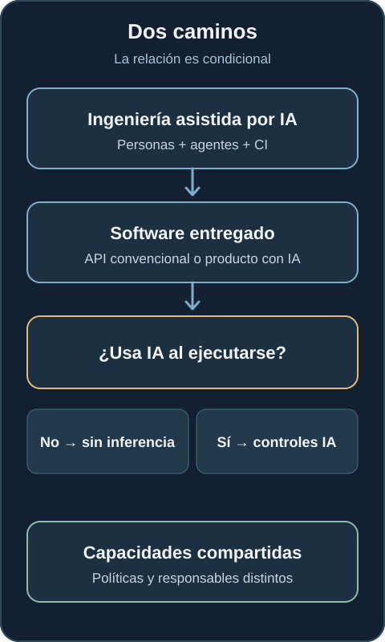
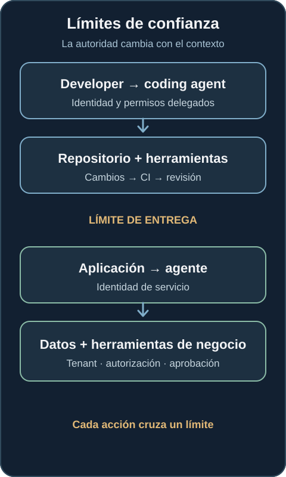
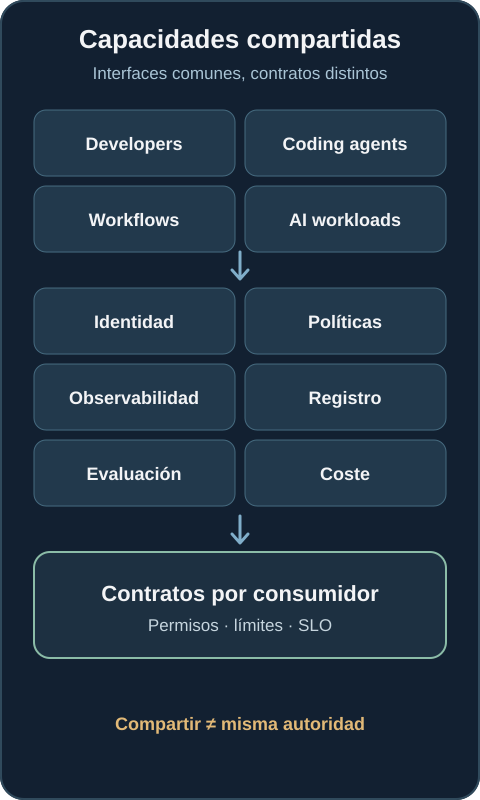
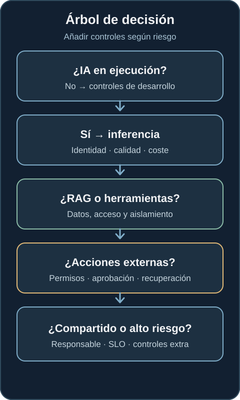

¿Qué diferencia hay entre usar IA para desarrollar software y operar IA en producción?
Dos modelos operativos pueden utilizar las mismas capacidades de plataforma. Sus límites de confianza, políticas y responsables necesitan contratos explícitos.
Un equipo de Plataforma recibe dos peticiones la misma semana. El equipo A utiliza Claude Code o Codex para modificar una API convencional. El equipo B construye un asistente para clientes que llama a un modelo y puede utilizar herramientas de negocio. Ambos dicen que «usan IA». ¿Deben depender sus productos de la misma plataforma de IA en producción?
La API del equipo A no necesita inferencia en producción solo porque un agente haya ayudado a escribirla. El coding agent sí necesita controles para acceder al repositorio, servicios externos, credenciales y revisión. El equipo B también necesita esos controles de ingeniería. Además, su aplicación debe controlar el comportamiento de IA mientras la utilizan los clientes.
Usar IA para construir software no implica incorporar un runtime de IA en ese software. Sin embargo, los dos modelos operativos pueden compartir capacidades de plataforma. En este artículo, AI Runtime designa las capacidades necesarias para ejecutar y gobernar el comportamiento de IA de una aplicación. No implica que siempre deba existir una plataforma independiente. Los ejemplos ilustran decisiones de diseño; no describen sistemas desplegados.

Camino 1: ingeniería asistida por IA
Entiendo AI Engineering Operating System como un modelo operativo: ciclo de vida, contratos, herramientas, controles y responsables que permiten participar a personas y agentes en la entrega de software. No es un producto comercial. Un ciclo de desarrollo impulsado por IA, o AI-DLC, describe cómo puede participar la IA en las distintas etapas. La descripción de AI-DLC de AWS ofrece un ejemplo; cada equipo puede adaptar sus etapas.
Un ciclo de vida no es una herramienta de ejecución. Una metodología como Spec-Driven Development puede definir cómo especificar, planificar y verificar un cambio dentro de una fase. Un harness de coding agent es el entorno de ejecución que proporciona instrucciones, acceso a herramientas y controles al agente. Ni la metodología ni el harness sustituyen la responsabilidad sobre el ciclo completo.
Context Engineering selecciona las instrucciones y el conocimiento relevantes para una tarea. Las instrucciones del repositorio, las decisiones de arquitectura versionadas, las skills compartidas y los procedimientos reutilizables aportan contexto; las herramientas aprobadas permiten actuar al harness. Los documentos externos, las respuestas de herramientas y el contenido del repositorio son entradas potencialmente no confiables, no autoridad para anular políticas. Un coding agent puede utilizar acceso delegado del developer o una identidad de workload separada. Hay que limitar ese acceso, proteger las credenciales y registrar qué principal autorizó las acciones relevantes.
Integración y entrega continuas (CI/CD) deben ejecutar comprobaciones deterministas cuando el código puede verificar una propiedad. Tests, políticas, revisión de cambios y aprobaciones producen evidencia; la explicación del agente no sustituye estas comprobaciones. Una persona responsable debe poder reconstruir el cambio, sus entradas y aprobaciones con una profundidad proporcional al riesgo. Los artículos anteriores desarrollan la adopción y gobernanza, la trazabilidad del coding agent y la verificación determinista.
Camino 2: IA en producción
Cuando una aplicación en ejecución llama a un modelo, la disponibilidad, los resultados y el coste del modelo pasan a ser responsabilidades de la aplicación. El equipo necesita una vía definida de acceso y enrutamiento de modelos, identidad y autorización del runtime, tiempos límite, límites de uso, atribución de costes y un responsable de incidentes. Debe decidir qué ocurre si el modelo falla, agota el tiempo, devuelve un formato inválido o produce una respuesta plausible pero incorrecta. La alternativa puede ser un proceso determinista seguro, una cola de revisión humana o un fallo explícito; no debe presentar una respuesta no verificada como correcta.
Las entradas y salidas pueden contener datos de clientes. Hay que aplicar el aislamiento y los permisos de cada tenant en los límites de aplicación y herramientas. También hay que definir retención, borrado y seguridad de prompts, resultados y trazas. Los logs pueden exponer datos sensibles: conviene minimizar o redactar su contenido y restringir el acceso. Los guardrails pueden filtrar contenidos seleccionados, pero no sustituyen la autorización, el tratamiento de entradas ni las pruebas frente a prompt injection.
La evaluación mide la calidad de la tarea con casos representativos, incluidas entradas adversariales y formas de fallo relevantes. Después de publicar la funcionalidad hay que observar calidad, latencia, disponibilidad, errores y costes. Las trazas deberían relacionar una petición con la versión del modelo, del prompt o configuración, la recuperación, las llamadas a herramientas, las decisiones de política y el resultado, respetando las reglas de datos. Definiría un objetivo de nivel de servicio (SLO), es decir, un objetivo explícito para el comportamiento del servicio, y un procedimiento de respuesta a incidentes adecuado a la funcionalidad.
Los controles dependen del riesgo. Una llamada de clasificación acotada puede necesitar validación de esquema, un conjunto de evaluación y una alternativa segura, sin un framework de agentes. Un agente de larga duración con permisos de escritura necesita controles más fuertes. No toda aplicación de IA es un agente autónomo.
Comparación de los modelos operativos
La tabla describe límites habituales, no reglas absolutas. Un coding agent operado centralmente puede ser en sí mismo un servicio de producción. Sus operadores necesitan controles de runtime aunque el software que modifica no dependa de IA.
- Consumidores: Developers, coding agents y workflows de entrega / Usuarios, servicios y agentes de runtime.
- Objetivo: Entregar un cambio correcto y revisable / Producir un resultado útil y seguro para la aplicación.
- Límite de ejecución: Equipo local o entorno gestionado del agente y pipeline / Aplicación, acceso al modelo, recuperación y herramientas.
- Límite de confianza: Developer, repositorio, contexto externo, CI y despliegue / Usuario, tenant, servicio, modelo, contenido recuperado y herramientas.
- Identidad: Identidad humana y acceso delegado o identidad de agente limitada / Identidad de workload; delegación del usuario cuando corresponda.
- Herramientas: Repositorio, tests, build y herramientas de ingeniería aprobadas / Modelo, recuperación y API de negocio; acciones restringidas.
- Contexto y datos: Código, instrucciones, especificaciones y secretos / Entradas, datos del tenant, registros recuperados y estado.
- Validación: Tests, comprobaciones estáticas, políticas y revisión / Esquemas, autorización, políticas y alternativa segura.
- Evaluación: Calidad del cambio, éxito de tarea y comportamiento del agente / Calidad, seguridad y resultados sobre casos representativos.
- Observabilidad: Historial de cambios, herramientas, CI y aprobaciones / Trazas, llamadas al modelo y herramientas, calidad, latencia y errores.
- Control humano: Revisión y aprobación de cambios o herramientas privilegiadas / Revisión de resultados o aprobación de acciones según riesgo.
- Impacto de fallo: Cambio defectuoso, exposición de código o credenciales, interrupción de entrega / Resultado incorrecto, exposición de datos o efecto de negocio.
- Coste: Tiempo del developer, uso del agente y CI / Inferencia, recuperación, ejecución, operación e incidentes.
- Responsabilidad: Equipo de ingeniería; Plataforma y Seguridad para controles comunes / Responsable del producto o servicio con Plataforma, Seguridad y Operaciones.
- Ciclo operativo: Tarea, cambio, revisión, release y feedback / Petición o evento, ejecución, observación, incidente y recuperación.
Ambos necesitan identidad, autorización, evidencia y evaluación. Pueden diferir el principal autorizado, el alcance de datos, la retención, el tiempo de respuesta y el umbral de aprobación. Por ejemplo, una misma pipeline de logs no debe exponer prompts de clientes a todos los developers que pueden consultar los logs de build.

Capacidades compartidas, contratos separados
Una plataforma puede ofrecer identidad y control de acceso, policy-as-code —políticas ejecutables y versionadas—, observabilidad, gestión de secretos y credenciales, y atribución de costes. También puede ofrecer gateways de modelos cuando aporten valor, registros de herramientas y capacidades aprobadas, gestión versionada de skills y configuración, e infraestructura de evaluación. Un registro informa de lo disponible; no debe conceder acceso por sí mismo. Un gateway puede centralizar enrutamiento y medición, pero también convertirse en una dependencia compartida de fallo y latencia. Antes de hacerlo obligatorio, hay que definir su comportamiento ante fallos y su responsable.
La interfaz y los mecanismos de control pueden reutilizarse, con políticas por consumidor. Un coding agent puede leer un repositorio sin acceder a datos de clientes. Un agente de runtime puede leer registros de un tenant mediante una API filtrada sin acceder al repositorio. La evaluación puede compartir infraestructura y conjuntos de datos solo cuando los permisos lo permitan; una batería de tests de código y un conjunto para medir respuestas a clientes evalúan resultados distintos. Presupuestos, retención, escalado de incidentes y SLO pueden ser diferentes aunque la telemetría use el mismo backend.
La ubicación no basta para definir el límite. Un agente local puede llamar a modelos y servicios remotos. Un agente de desarrollo gestionado centralmente puede ejecutar trabajos compartidos, mantener credenciales y afectar a muchos equipos. Un agente de runtime operado por la empresa puede actuar para un cliente o procesar eventos sin un usuario interactivo. Las preguntas útiles son quién opera cada componente, qué dependencias comparte, qué identidad utiliza, qué puede hacer y quién responde ante un fallo. Un agente de desarrollo ofrecido como servicio compartido necesita sus propios controles de seguridad y fiabilidad en producción.

Tres ejemplos de arquitectura
1. Una API convencional desarrollada con IA
Un developer utiliza un coding agent para proponer un cambio en una API de inventario. El harness lee el repositorio autorizado y ejecuta tests aprobados. CI verifica el cambio y una persona lo revisa. La API desplegada atiende peticiones mediante su backend y base de datos habituales; no llama a ningún modelo.
Límite de confianza: el agente pasa de la autoridad del developer al acceso al repositorio y las herramientas; CI y despliegue tienen permisos separados. Hay que proteger código, credenciales y datos enviados al modelo externo. Responsable: el equipo de ingeniería responde por el cambio y el servicio; Plataforma responde por el servicio compartido de agentes y la capacidad de CI. La API no necesita por ello infraestructura de inferencia en producción.
2. Una funcionalidad de IA en producción
Un backend de soporte envía una solicitud de cliente a un modelo para clasificarla o resumirla. El backend autentica a quien llama, limita la petición al tenant, minimiza los datos enviados, utiliza un modelo aprobado y valida el esquema de salida. Aplica un tiempo límite y presupuestos de uso y coste. Si la respuesta no supera la validación, envía la solicitud a una cola humana en vez de inventar una categoría. Un conjunto representativo evalúa errores de clasificación y omisiones en resúmenes; la monitorización sigue calidad, latencia y fallos.
Límite de confianza: la entrada del cliente pasa al procesamiento del modelo y la salida vuelve como entrada no confiable de la aplicación. La aplicación aplica permisos de tenant y retención. Responsable: el equipo del servicio de producto responde por comportamiento, calidad e incidentes; Plataforma puede operar el acceso al modelo. Este diseño no necesita un sistema multiagente.
3. Un agente de producción que usa herramientas
Un agente lee datos autorizados de una cuenta y propone un reembolso. Un gateway de herramientas comprueba identidad de servicio, tenant, acción e importe frente a la política. Una persona aprueba las acciones que superan un umbral de riesgo; la aprobación queda vinculada a la acción y parámetros exactos, caduca y vuelve a comprobarse antes de ejecutar. La API de negocio autoriza la acción de forma independiente. Una traza conecta petición, referencias a datos recuperados, llamadas, aprobación y resultado sin registrar datos sensibles innecesarios.
Un reintento tras un timeout puede duplicar el reembolso. Se necesita una clave de idempotencia vinculada a la operación de negocio y consultar el sistema de referencia antes de reintentar. Hay que conservar estado en puntos adecuados y distinguir una acción fallida de un resultado desconocido. Deben existir reconciliación, compensación cuando sea posible, escalado y una forma de detener el agente. También hay que aislar datos y estado de ejecución por tenant, limitar alcance y duración de las herramientas y probar la inyección de instrucciones en contenido recuperado.
Límite de confianza: el agente pasa de una intención generada por el modelo a datos y efectos de negocio. La respuesta del modelo es una propuesta, no una autorización. Responsable: el equipo del producto o servicio responde por resultados y recuperación; los propietarios de herramientas protegen sus API; Plataforma, Seguridad y Operaciones responden por sus controles compartidos y procedimientos de incidentes.
Marco de decisión

- ¿La IA solo se usa durante el desarrollo? Protege el agente, el contexto, las herramientas y la pipeline. La aplicación resultante no necesita inferencia por ese motivo. Si el agente se opera centralmente, trátalo como una carga de producción con su propio responsable.
- ¿La aplicación llama a un modelo? Define identidad, acceso, tratamiento de datos, validación, evaluación de calidad, comportamiento ante fallos, observabilidad y coste. Empieza con los controles mínimos que cubran el riesgo.
- ¿Utiliza generación aumentada por recuperación (RAG)? RAG añade material recuperado a la entrada del modelo. Aplica permisos de fuente y tenant antes de recuperar, registra versión y vigencia de las fuentes y evalúa tanto la recuperación como la respuesta. Trata el texto recuperado como no confiable.
- ¿Las herramientas pueden producir efectos externos? Añade autorización independiente, permisos limitados, idempotencia, aprobación cuando corresponda y recuperación de resultados parciales o inciertos. El acceso de solo lectura también puede exponer datos sensibles.
- ¿La ejecución es compartida, programada o activada por eventos? Identifica operador e identidad de workload. Limita concurrencia, reintentos, presupuestos y aislamiento. Asegura trazabilidad y guardia incluso si ninguna persona inicia la ejecución.
- ¿La operación es de alto riesgo o está regulada? Relaciona las obligaciones aplicables con evidencia, retención, aprobaciones, revisión independiente y respuesta a incidentes. Involucra a los responsables de riesgo y legales; un servicio gestionado no demuestra cumplimiento por sí mismo.
Las ramas se acumulan. La arquitectura adecuada depende de las consecuencias, la reversibilidad, la sensibilidad de los datos y la capacidad de detectar y recuperar fallos, no de llamar «agente» al sistema.
AWS como ejemplo de implementación
Para el segundo ejemplo, Amazon Bedrock ofrece acceso a modelos; una aplicación podría utilizar AWS Lambda para procesar peticiones y roles de AWS IAM con credenciales temporales para el acceso de workloads. Amazon CloudWatch puede recoger telemetría operativa. El equipo sigue definiendo autorización de tenants, tratamiento de datos, pruebas de calidad, alertas y alternativas ante fallos.
Amazon Bedrock Guardrails puede evaluar políticas de contenido configuradas para casos compatibles. Su documentación sobre ataques al prompt explica requisitos de integración e indica que ese filtro no evalúa resultados de herramientas. Hay que probar la integración real y autorizar herramientas de forma independiente.
Para una carga de agentes apropiada, Amazon Bedrock AgentCore Runtime ofrece capacidades gestionadas de ejecución y aislamiento. Su guía de seguridad mantiene en la aplicación la responsabilidad de vincular usuarios y sesiones y aplicar mínimo privilegio. Hay que consultar la documentación del modo de runtime elegido y sus límites de aislamiento. AWS Step Functions puede coordinar workflows con reintentos y tratamiento de errores. Ni una política de reintentos ni la orquestación gestionada hacen idempotente una acción de negocio externa. El equipo conserva la responsabilidad de autorización, deduplicación, recuperación e incidentes.
Son opciones, no componentes obligatorios. Deben elegirse según los contratos de la carga y comprobar el soporte, la región y la configuración vigentes antes de implementarlas.
Platform Engineering: contratos que se pueden consumir
La plataforma sirve ahora a developers, coding agents, workflows automatizados de ingeniería y cargas de IA en producción. Cada consumidor necesita una interfaz utilizable para solicitar identidad, herramientas, acceso a modelos, decisiones de política, telemetría o evaluación. Un contrato útil identifica consumidor, permisos, alcance de datos, responsable, objetivo de fiabilidad, atribución de costes, comportamiento ante fallos y vía de escalado. Debe facilitar el camino seguro y hacer visibles las excepciones.
El objetivo no es crear más infraestructura. Es definir interfaces, límites de seguridad y responsabilidades operativas claros. Plataforma ofrece capacidades; los equipos de aplicación e ingeniería mantienen la responsabilidad de su uso y resultados. Seguridad define y revisa controles con esos responsables; Operaciones y SRE ayudan a definir fiabilidad y respuesta. Una capacidad compartida aporta valor cuando cada consumidor entiende sus garantías y sus límites.
Conclusión
La ingeniería de software asistida por IA y el comportamiento de IA en producción son problemas de ingeniería diferentes. Pueden reutilizar identidad, políticas, observabilidad y otras capacidades, pero necesitan su propia autoridad, límites de ejecución y responsables operativos.
Cuando un agente solicite su siguiente capacidad, ¿quién concede la autoridad, qué límite cruza la acción y quién puede detectar y recuperar su fallo?